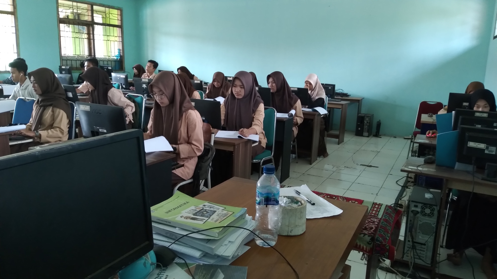
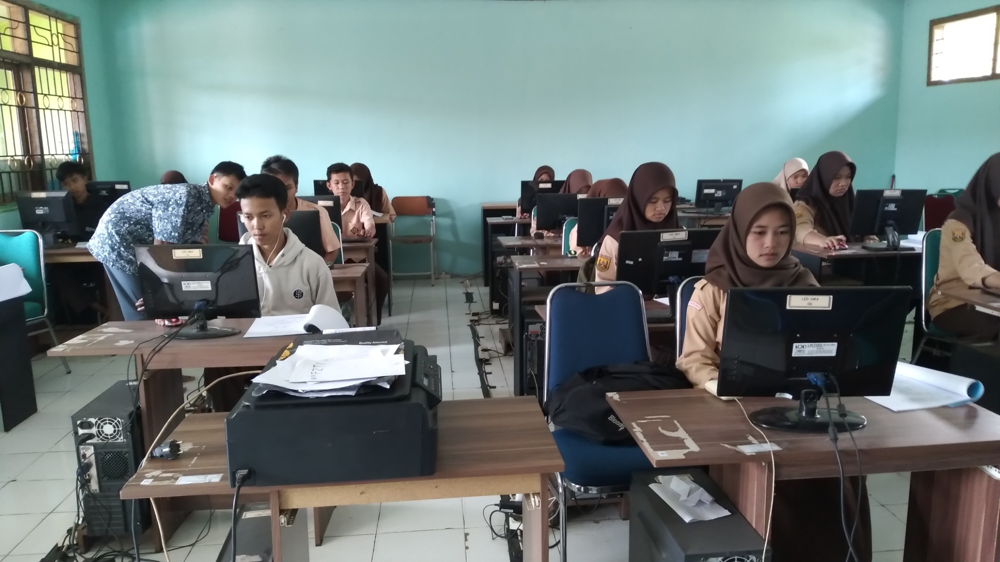

Welcome




Guru Pembimbing | Pembina Ekskul IT
Ekstrakurikuler ini bertujuan untuk mengasah bakat dan minat siswa didalam bidang Infromatika dan teknologi seperti mempelajari bahasa pemograman, membuat website, E- Sport, membahas seputar teknologi dan komputer.